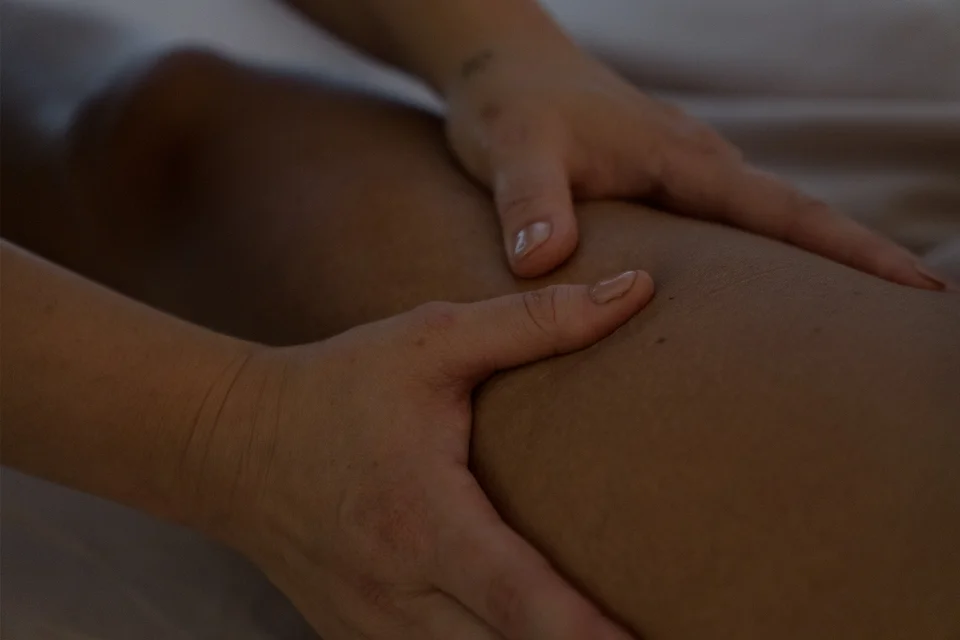

Un geste manuel plus profond, sans jamais forcer
Le remodelage est une technique manuelle qui s'adresse aux couches que le drainage seul n'atteint pas : le tissu sous-cutané. Il accompagne la tonicité de la peau et le galbe de la silhouette.
Là où le drainage relance la circulation et allège les tissus, le remodelage vient travailler le tissu en profondeur. On s'y intéresse souvent pour une cellulite installée, un manque de tonicité ou des zones récalcitrantes. Chaque corps répond à son rythme : je ne promets pas un résultat identique pour toutes.
Comme le reste de la Méthode Nado®, c'est un soin de bien-être et d'esthétique, non médical. Il est transmis par Élisabeth Nado, créatrice de la méthode, et je suis la première praticienne certifiée Méthode Nado® en région toulousaine.
Découvrir la Méthode Nado® →
Drainage ou remodelage ? Les deux se complètent
Le drainage est la base de tout accompagnement ; le remodelage vient s'y ajouter progressivement, selon vos objectifs.
Le drainage lymphatique
- Pressions très légères, lentes et rythmées, juste sous la peau
- Accompagne la circulation lymphatique et allège les tissus
- Sensation de légèreté, parfois de somnolence
- La base de tout accompagnement, dès L'Initiale
Le remodelage corporel
- Geste plus profond, qui s'adresse au tissu sous-cutané
- Accompagne la tonicité de la peau et le galbe de la silhouette
- Adapté à votre corps : une gêne, et nous ajustons
- Vient compléter le drainage progressivement, selon vos objectifs
Comment le remodelage s'intègre à votre suivi
-
L'Initiale · 1h45 · 160 €Un temps d'échange, un bilan, une prise de mensurations de référence et une première séance de drainage complète. C'est le point de départ de tout accompagnement : il permet de comprendre votre corps et de définir vos objectifs.
-
Le drainage, d'abordLe drainage reste la base de votre suivi, séance après séance.
-
Le remodelage, progressivementSelon vos objectifs et les besoins de votre corps, le remodelage vient compléter le drainage. C'est le principe de L'Alignement : 10 séances d'1h (1 000 €, soit 100 € la séance), construites autour du drainage et progressivement complétées par du remodelage.
-
Un suivi mesuréVotre ressenti et vos mensurations sont réévalués aux séances 5 et 10, pour faire le point ensemble sur votre évolution.
L'Initiale se réserve en ligne sur Planity. L'Alignement se réserve par téléphone au 07 69 85 36 79, en général à l'issue de L'Initiale ; si vous vous engagez dans les 7 jours qui suivent, elle compte comme première séance du forfait. Les séances ne sont pas remboursées par la Sécurité sociale.
Avant de réserver, un point de sécurité
Les contre-indications présentées pour le drainage (thrombose veineuse non stabilisée, infection aiguë, insuffisance cardiaque décompensée, cancer en phase évolutive non stabilisée, grossesse tous trimestres confondus) s'appliquent également au remodelage.
Un questionnaire est rempli lors de L'Initiale. En cas de doute, contactez-moi avant de réserver, ou consultez toutes les contre-indications.
Le remodelage corporel, vos questions
Le drainage utilise des pressions très légères, juste sous la peau, pour accompagner la circulation de la lymphe et alléger les tissus. Le remodelage est un geste plus profond, qui s'adresse au tissu sous-cutané pour accompagner la tonicité de la peau et le galbe. Dans la Méthode Nado®, les deux se combinent souvent au sein d'un même accompagnement.
Le geste est plus profond que celui du drainage, mais la Méthode Nado® repose sur un principe : on ne doit plus souffrir pour être bien dans son corps. Si une sensation vous gêne pendant la séance, dites-le-moi : nous ajustons.
Je préfère être honnête : je ne promets pas de perte de poids. Le remodelage accompagne le galbe de la silhouette et la tonicité de la peau ; il ne remplace ni une alimentation équilibrée, ni une activité physique.
Le remodelage s'inscrit dans un accompagnement : on commence par L'Initiale (160 €, 1h45), puis L'Alignement (1 000 € les 10 séances d'1h, soit 100 € la séance) est construit autour du drainage et progressivement complété par du remodelage. Les séances ne sont pas remboursées par la Sécurité sociale.
Au cabinet de Muret, au 23 avenue du Président Vincent Auriol : environ 25 km, soit une demi-heure en voiture hors heures de pointe depuis le centre de Toulouse. Je me déplace aussi à domicile dans un rayon de 30 km autour de Muret ; pour savoir si votre accompagnement s'y prête, appelez-moi au 07 69 85 36 79.
Commencez par l'Initiale
Tout accompagnement, drainage comme remodelage, débute par ce premier rendez-vous de 1h45 : échange, bilan, mensurations et première séance complète.